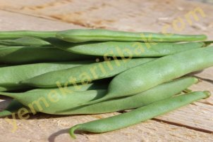
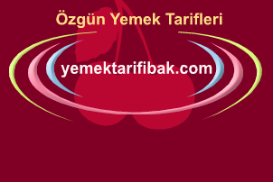

Taze Fasulye
Taze fasulyede A, B, C vitaminleri, fosfor, potasyum, demir ve kalsiyum mineralleri ayrıca, klorofil ve karbon hidratlar var. Taze fasulye hele de zeytinyağıyla hazırlan-mışsa besin değeri daha çok artar. Ve kalori değeri yükselir. Protein bakımından zengindir. Fasulyeden alınan bitkisel protein hayvansal protein gibi zararlı değildir, toksit etkileri yoktur.
Nasıl Alacaksınız?
1- Taze fasulyenin tazesi kırdığınız zaman cam gibi "çıt" diye bir ses çıkarır.
2- Kırılan yerde küçük su damlacıkları görülür.
3- Genişliği 6 milimetre kadar olmalı, yani taze fasulye fazla geniş olmamalıdır. Zira genişledikçe ipliği de artar.
4- Tazelerine bakın. Fasulyenin tazesinin taneleri küçük ve yuvarlaktır. Tane ne kadar büyük ve yassı ise fasulye de o kadar bayattır.
5- Renk de tazeliğin bir ölçüsüdür. Taze fasulye yemyeşildir. Renk sarıya çalmaya yüz tutmuşsa bayat demektir.
Nasıl Hazırlayacaksınız?
1- İyice yıkayın. Fasulye sırıklarda yetişir. Altta bulunan sebzeler toprağa değer, mikroplu sularla temaslıdır. Gerek bu mikropların, gerekse üstlerinde bulunabilecek tarım ilacı artıklarının yokedilmesi için tencereye koymadan önce fasulyeyi iyice yıkayın.
2- Aldığınız gün yemek yapın.Taze fasulyenin içinde A, B ve C vitaminleri ve çeşitli madensel tuzlar bulunur. Taze fasulye bir günden fazla bekletildiğinde içindeki C vitamininin yüzde 20'sini kaybeder.
3- Fazla kaynatmayın. C ve B vitamini sıcağa karşı duyarlıdır. Ayrıca yarım saat sonra kaynatılan taze fasulye, her yüz gramında bulunan sodyumun 4, potasyumun 18, kalsiyumun 6, magnezyumun 11, demirin 0.2, bakırın 0.1, fosforun 15, klorun ise 14 miligramını kaybeder.
Yararları:
Organizmanın madensel tuzlar gereksinimini karşılar.
Böbrek taşlarının düşmesine yardımcı olur.
İçinde fosfor bulunduğundan güç verir, fiziksel ve zihinsel yorgunlukları giderir.
İdrar söktürür.
Şeker ve karaciğer hastalıklarının, sanlığın iyileşmesini kolaylaştırır. Günde yarım bardak içilecek olan taze fasulye suyu en iyi doğal ilaçtır.

Şalgam
Avusturyalı hekim R.Breuss, 1950'den beri, kanser hastalığım şalgam suyuyla iyileştirmeyi deniyor. Doktor Breuss, kanser hastalarına kırk iki gün boyunca, havuç, kereviz, patates ve şalgam suyu içmelerini öneriyor ve bu kür sayesinde kanseri yenebileceklerini söylüyor.
Latince adı "Brassica Napus" olan şalgam turpgillerden bir sebzedir. Yapısında A,B ve C vitaminleri, iyot, kalsiyum, magnezyum, potasyum ve fosfor gibi madensel tuzlar, yapraklarında demir ve bakır bulunan şalgam zengin bir besin kaynağıdır. Doğabilimci ve beslenme uzmanı Maurice Messegue bu sebze hakkında şunları yazar: 'Vitamin, şeker ve madensel tuzlar yönünden çok zengindir. Çocuklarınız şalgamı seviyorlarsa, bırakın bol bol yesinler. Kesinlikle, sebzelerin sağlığa en yararlı olanıdır.." Yararları Avusturyalı hekim R.Breuss'ün kansere karşı ilaç olarak önerdiği şalgamın pek çok hastalıkları iyileştirici özelliği vardır. Şöyle ki:
Bronşları açıp göğsü yumuşatır, solunum yollarını temizler,
Öksürüğe, bronşite, anjine, zatürreye, zatülceme, astıma ve boğmacaya karşı etkin bir doğal ilaçtır,
Dıştan uygulandığında romatizma, gut ve eklem yangılarının ağrılarını dindirir,
Çıban ve apseleri iyileştirir,
Soğuktan meydana gelen çatlakları, yara bereleri kapatır.
Nasıl Kullanacaksınız?
Demleme: İnce kıyılmış büyük bir şalgamı bir litre suya atın ve balla tatlandırarak istediğiniz kadar için. R.Breuss'e göre bu su kanser tümörünün faaliyetini durdurur.
Şurup: Büyücek bir şalgamı oyun, oyulmuş yere nöbet şekeri veya bal koyun, sonra şalgamınızı bir bardağa yerleştirin. Şurup yavaş yavaş şalgamdan bardağa süzülür. Günde yarım bardak için.
Kuvvet Macunu: Şalgam, "Deli" diye anılan, onsekizinci Osmanlı padişahı Sultan İbrahim'in kuvvet macunudur.
Soğan
Sarımsağın yakın akrabası soğan, dünya beslenme listelerinde sarımsaktan sonra ikinci sırayı alır. Afganistan ve İran kökenlidir ama binlerce yıl önce Mısırlılar ve Keldaniler de bu sebzeyi ekip üretiyorlardı. Romalılar ve Frenkler bolca soğan yerlerdi. Yemeklerimizin baş tacıdır. Çiğ olarak salata şeklinde de yenir. Fransızlann ünlü soğan çorbası dünyaca tanınır.
Potasyum, fosfat, sodyum, fosfor, iyod, demir, kükürt ve silisyum gibi madensel tuzlar deposudur. A,B,C vitaminleri yönünden zengindir. Soğanda ayrıca şeker de vardır.
Yararları:
Organizmanın madensel tuz ve vitamin gereksinimini karşılar.
Sinir sistemini düzenler.
Damar sertliğine karşı en iyi doğal ilaçtır.
Sindirim sistemini uyarır, bağırsakları temizler.
İdrar söktürücüdür. Böbrek sancılarından, böbrek ve idrar kesesi taşlarından, ödemden, idrar tutukluğundan, albümünden yakınanlara çok iyi gelir.
Kandaki şeker oranını düşürdüğünden şeker hastalannın doğal bir ilacıdır. Etkin bir antiseptiktir. Bağırsakları kurtlardan temizler.
Çarpıntıyı giderir.
Kanı Zehirlerden Temizler:
Soğan bir yandan idrar söktürerek, bir yandan terlemeyi sağlayarak hücreleri artıklardan temizler, toksinleri atar.
Soğukalgınlığına Karşı Korur:
C vitamini deposu soğan bizi, grip, nezle gibi soğukalgınlığından doğan hastalıklara karşı korur. Zira C vitamini organların direncini arttırır.
Tene Leylak Rengi Verir:
Soğan kadın teninin en büyük dostudur. Cilde parlaklık kazandırır ve leylak rengi verir. Soğandan yapılan çeşitli güzellik losyon ve masklarının nasıl hazırlandığını bu kitabın bir bölümünde aynca belirteceğiz.
Nasıl Alacaksınız?
Soğan maydanoza, naneye, marula benzemez. Genellikle ya toptan ya da bir kaç kilo birden alınır. Bu bakımdan soğanın dayanıklılığı önemlidir. Dayanıklı soğan nasıl olur:
1- Kabuğu ince açık kahverengindedir,
2- Şekli kantar topuna benzer, yani göbeği şişkin uç kısımları armudidir.
3- Eti kalın değil incedir. Etli soğan lezzetli olur, ancak, çok dayanmaz.
Nasıl Koruyacaksınız?
Yeriniz elverişliyse soğanları birbirine az değecek şekilde yayınız. Eğer çuvalda saklıyacaksanız az güneş alan serin bir yerde bulundurun. Böylece çimlenmesini önlemiş olursunuz.
Ağlamadan Soğan Nasıl Doğranır?
Soğan doğramak ev kadınının en büyük sıkıntısıdır. Gözyaşı dökmeden soğan doğramak istiyorsanız şu yöntemleri deneyin:
1. Soğan doğrarken çeşmeyi açın
2. Ekmeğin içini oyun, hamuru soğan doğradığınız bıçağın sapına tekerlek biçiminde geçirin. Niçin nedendir bilinmez ama gözlerinizin daha az yaşardığını göreceksiniz.
3. Mutfağınızda davlumbaz ya da aspiratör varsa, davlumbaz ya da aspiratörün altında durarak soğanı doğrayın.
4. Ağzınıza bir yudum su alın ve soğan doğrama işi bitinceye kadar yutmamaya çalışın. Böylece, dikkatinizi suya yöneltmiş olur ve daha az gözyaşı dökersiniz.
5. Kabuğunu soyduktan sonra, doğramaya başlamadan önce soğana birkaç damla sirke damlatın.
Yukardaki yöntemlerden herhangi birini uyguladığınız takdirde ağlamadan soğan soyar ya da daha az gözyaşı dökersiniz.
Soğan Kokusu:
Soğanın çiği pişmişinden çok daha yararlıdır. Kokusundan çekindiğimiz için çiğ yemekten korkarız. Soğan seviyorsanız, kokuyu önlemek için aşağıdaki önerileri yerine getirmeniz yeterlidir:
1- Çiğ soğan yedikten sonra bir kahve kaşığı kahve yutun.
2- Yarım demet maydanoz yeyin.
Elinizdeki ya da bıçaktaki soğan kokusunu ise şöyle giderebilirsiniz:
1. Bir kaç dal maydanozu elinizde oğuşturun,
2. Elinizi ve bıçağı limonla silin.